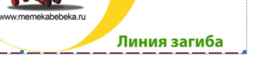
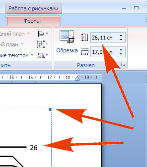

Искажаются размеры при печати
klumba / 20.04.2011, 00:59/00:41
Форум:
Для инет-магазина детской обуви нужен Стопомер (линейка, на которую ребенок ставит ножку для определения длины стопы и соответствующего размера обуви). Предназначен для скачивания пользователями и самостоятельной печати не принтере.
Стопомер нарисован, выверен и т.д. При печати размеры изображения меняются совершенно непредсказуемо. Экспортировалось уже всеми форматами с подложной по формату А4 и без нее. Подгонка методом тыка - не решение. Что делать?
Кстати, было найдено 2 стопомера в нете, оба в word - врут!
klumba, проблема в драйвере принтера а не в проги.
klumba, дайте файл "Стопомер" или ссылку
Des425, не уверена, вернее шанс маленький, но попробую и через так )
Solowejka, свой могу в лс. А вот из нета: http://kidditop.ua/stopomer, http://www.memekabebeka.ru/shoes/razmer/ (скачать).
Вообще стоит вопрос об универсальном формате для массы пользователей - реально вообще, как думаете?
Жду советов ))
klumba, просмотрев ссылку стало понятно, что тебе нужно, исходя из этого, если ты настроишь масштаб рабочий среды 1:1, то при печати размеры не исказятся.
А что бы узнать как это сделать воспользуйся поиском по форуму.
В CorelDraw за это отвечает Colibrate Rulers


На первом рисунке показана обрезка вашего рисунка внизу по линии сгиба.
На втором рисунке видно, что размер по высоте вашего рисунка 26,11 см.
Риска 26 см по вашей линейке на рисунке далеко от маркера размера рисунка, который почти 26 см.
Так что ошибка уже заложена в вашем исходном файле...чертёжники.
klumba, универсальный формат — PDF
После калибровки tiff стал идеален, pdf и jpeg по-прежнему врали. Но tiff - это фотошоп и размер - не каждому. Вставила в ворд по примеру предшественников и о чудо! можно подаваться на эталон )))
Логику понять так и не смогла: форматы экспорта - размер - печать..
Всем спасибо за помощь!